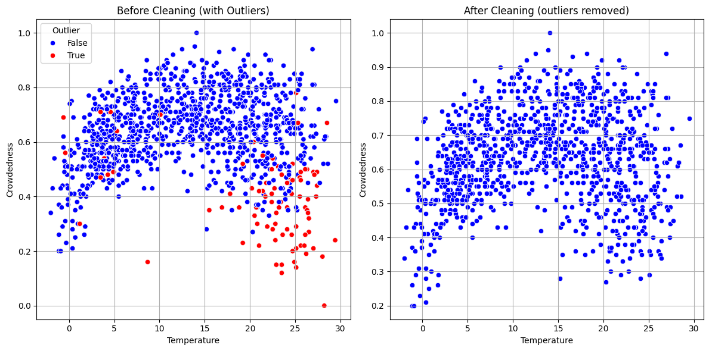

In this project, we worked with a Golf dataset consisting of 7,664 rows. The goal was to detect and remove multivariate outliers to improve the quality and reliability of the data for further analysis.
As a first step, we removed several columns that were irrelevant to our numerical analysis:
IDDateWeekdayMonthEmailCampaignMaintenanceTaskHolidayWe focused on the following numerical features:
TemperatureHumidityWindyCrowdednessPlayTimeHourOutlier detection was performed using Mahalanobis Distance, a statistical technique that considers correlations between variables to identify data points that deviate significantly from the multivariate mean.
To compute Mahalanobis Distance robustly, we used MinCovDet (Minimum Covariance Determinant), which
provides a robust estimate of the data's center and spread. A chi-square threshold (at 99% confidence) was
applied to classify extreme values as outliers.
Benefits of Multivariate Outlier Removal:
Below are visual comparisons showing data before and after outlier removal using boxplots and scatterplots:
As a result, the dataset became significantly cleaner and more suitable for further analysis, such as prediction, segmentation, or behavior modeling.